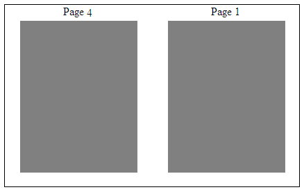
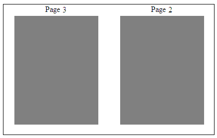

[Table of Contents] [docx version]
WordprocessingML Reference Material - Table of Contents
bookFoldPrintingSheets (Number of Pages Per Booklet)
This element shall be used in conjunction with the bookFoldPrinting (§2.15.1.11) and bookFoldRevPrinting (§2.15.1.13) elements to specify the number of pages to be included in each booklet when printing a series of signatures. Signatures are printed sheets, which depict several pages of a document that are to be folded and bound with other signatures to form a booklet. Booklets can be bound together to form a book like publication.
If this element is omitted, then its default behavior shall be to print the contents of the content on a single sheet. A sheet is a single piece of paper which is folded and cut to produce a book.
[Example: Consider a four page WordprocessingML document will be printed as a set of two signatures to be compiled into a single booklet. This setting would be specified using the following WordprocessingML fragment in the document settings part:
<w:bookFoldPrinting w:val=“true” />
<w:bookFoldPrintingSheets w:val="4" />
The bookFoldPrintingSheets element's val attribute specifies that 4 pages shall be included in each booklet. Since each signature contains two pages and are printed such that the signatures may be placed back to back, with top the bottom of each sheet aligned, and folded such that the booklet is created, a booklet containing four pages distributed over two signatures may be created.
This setting is depicted visually using the illustration below (gray shading represents a page):
|
First Printed Signature |
|
 |
|
Second Printed Signature |
|
 |
end example]
|
Parent Elements |
|
settings (§2.15.1.78) |
|
Attributes |
Description |
|
val (Decimal Number Value) |
Specifies that the contents of this attribute will contain a decimal number.
The contents of this decimal number are interpreted based on the context of the parent XML element.
[Example: Consider the following numeric WordprocessingML property of type ST_DecimalNumber:
<w:… w:val="1512645511" /> The value of the val attribute is a decimal number whose value must be interpreted in the context of the parent element. end example]
The possible values for this attribute are defined by the ST_DecimalNumber simple type (§2.18.16). |
The following XML Schema fragment defines the contents of this element:
<complexType name="CT_DecimalNumber">
<attribute name="val" type="ST_DecimalNumber" use="required"/>
</complexType>